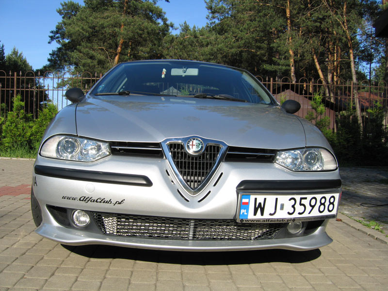
Tom - Poland
ENGINE- 2,5 V6 24V Supercharged (250Bhp)
- Rotrex supercharger C30-94
- Silicone air intake
- Pipercross Viper Carbon Fibre performance filter
- Supersprint stainless steel performance exhaust
- Thermotec exhaust header wrap
- Greddy EGT meter
- Greddy OIL temperature meter
- Greddy BOOST meter
- Oilcooler Setrab
- Intercooler
- Blow off valve F1Z
- New MAF sensor
- New temp sensors
- New cooling system
- Head modification by Chojnacki Motor Sport
- ProBlend cooling fluid prevents coolant temperature from rising excessively
- Fuel injectors 345cc
- ECU Remap by Unitronic.pl (Serial Bosch motronic remap)
SUSPENSION & BRAKES
- Koni sport kit 1130 (adjustable suspension, lower springs (-35mm) and sport shocks)
- Sparco strut bar
- Zimmermann performance brake discs
- Ebc Green Stuff brake pads
- Ebc performance brake fluid
- Powerflex polyurethane suspension
XENON LIGHTS
ELECTRIC SUNROOF WEBASTO Holandia 300 DELUX
TIRES - Yokohama AVS SPORT 205/55/16 W
WHEELS - GTA model 16" wheels
BODYKIT - Cadamuro Design side skirts, Zender front bumper spoiler
alfaclub.pl
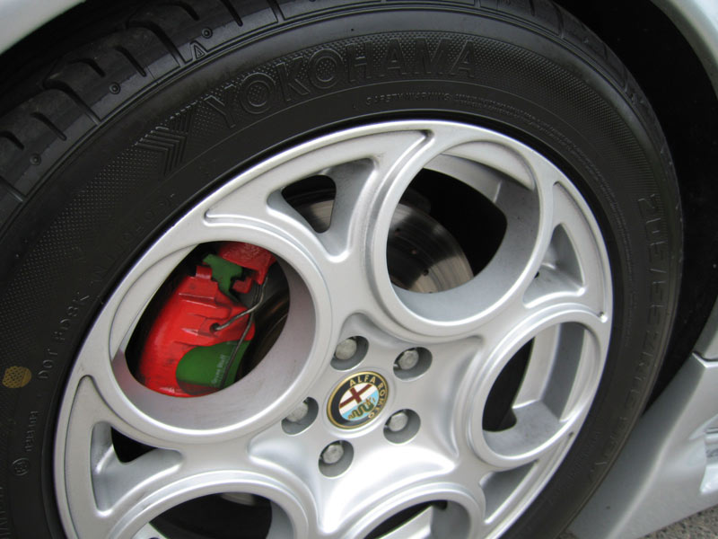
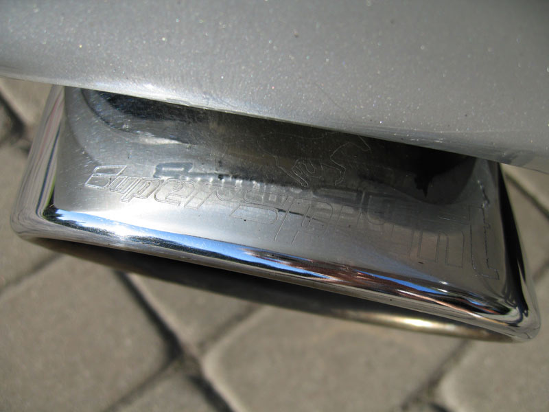
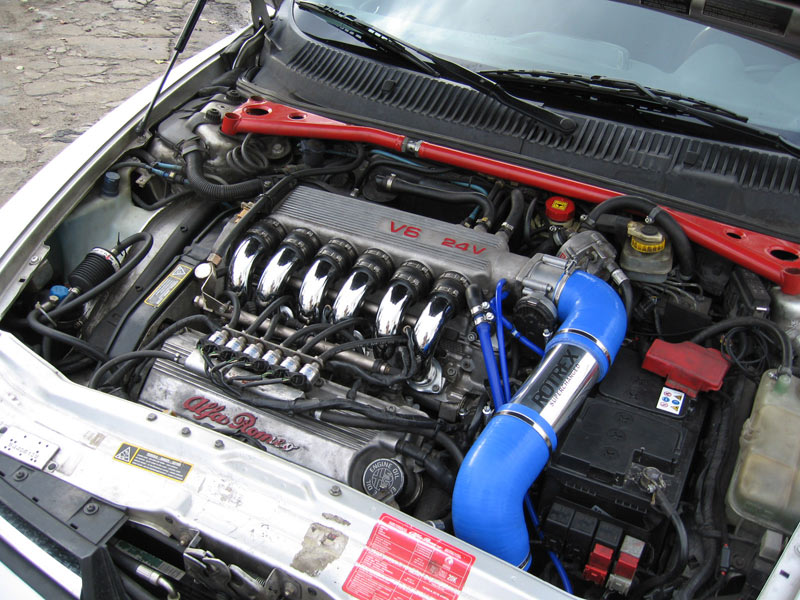
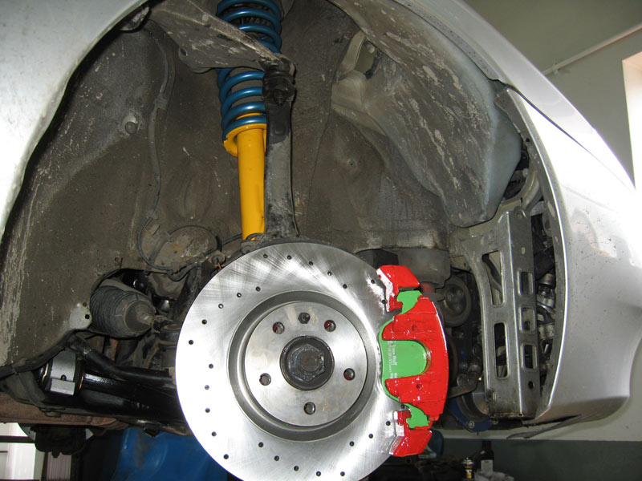
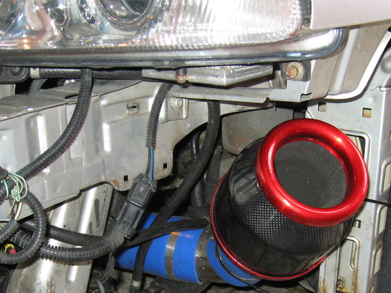
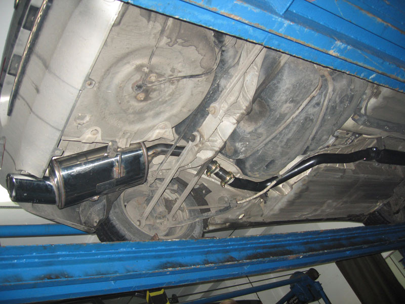
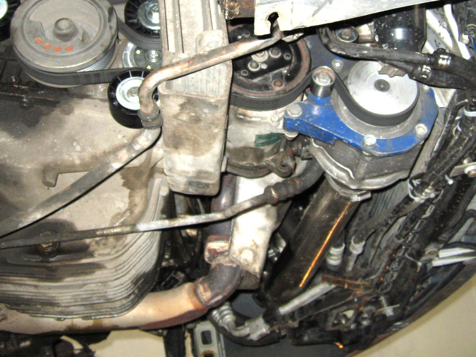
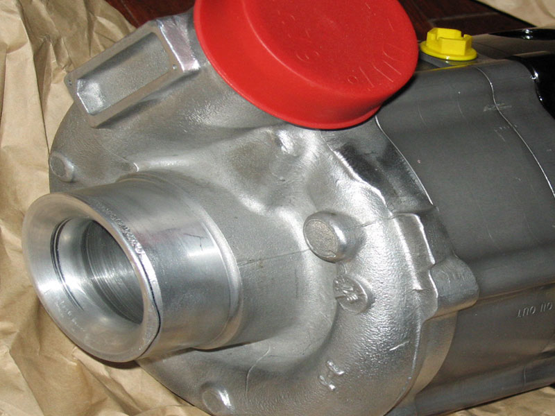
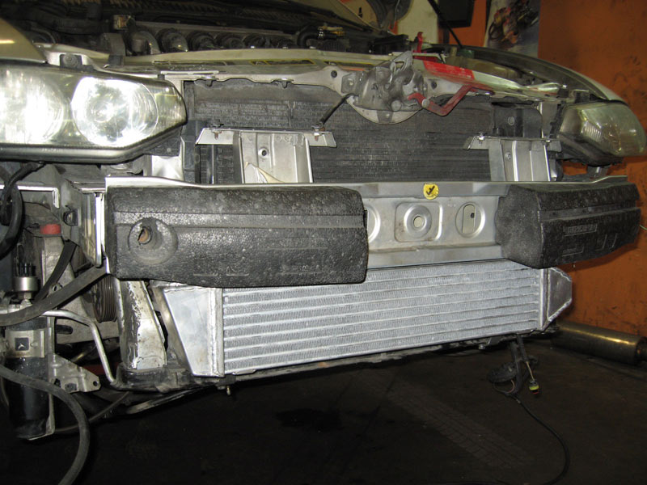
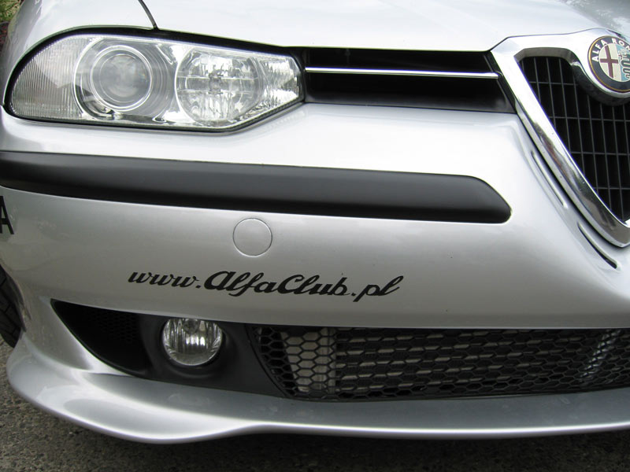
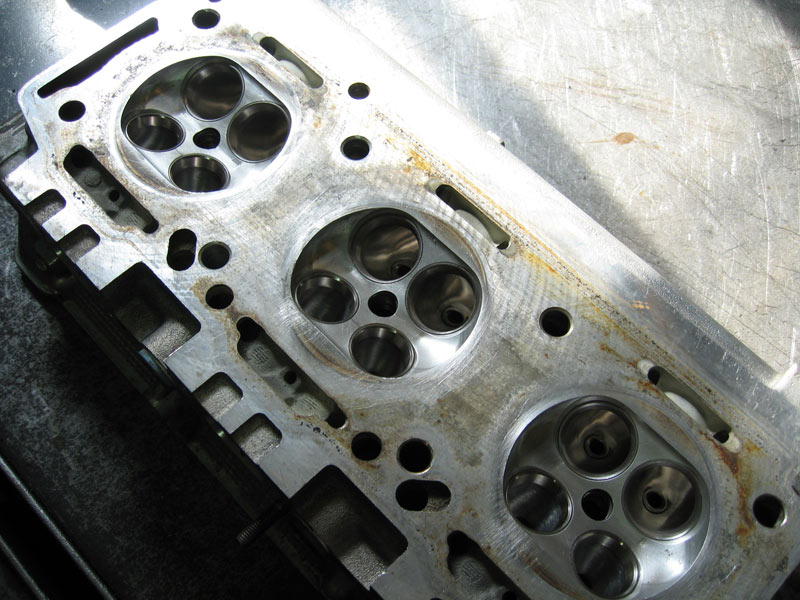
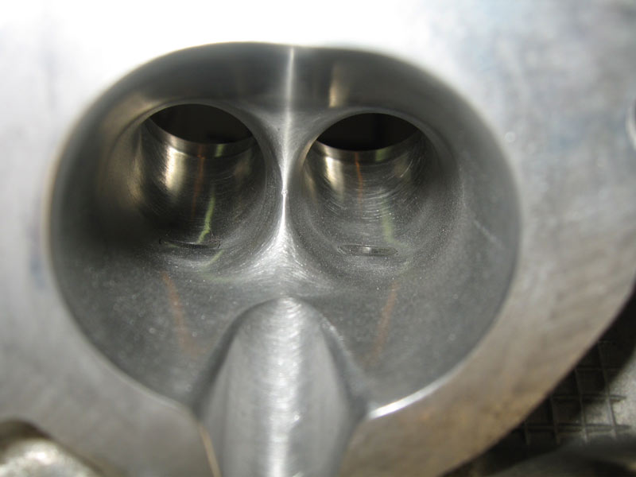
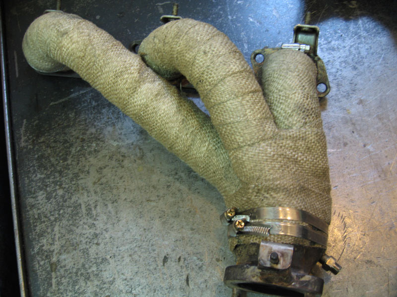
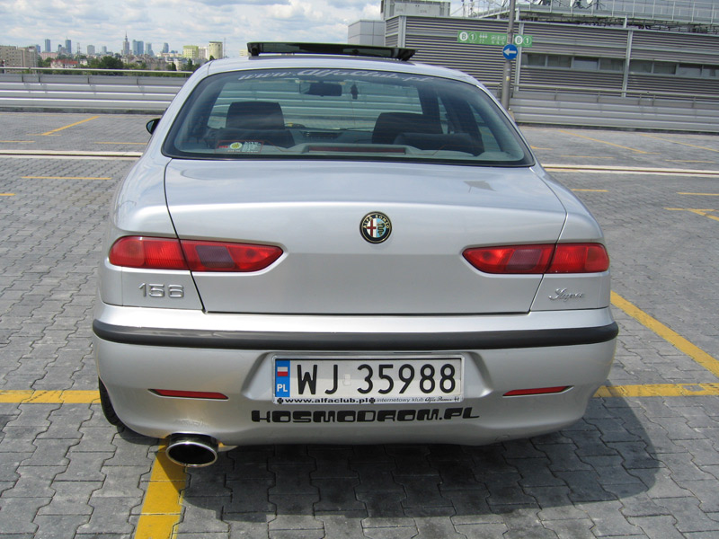
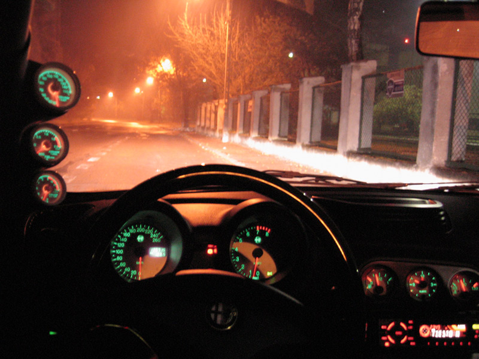
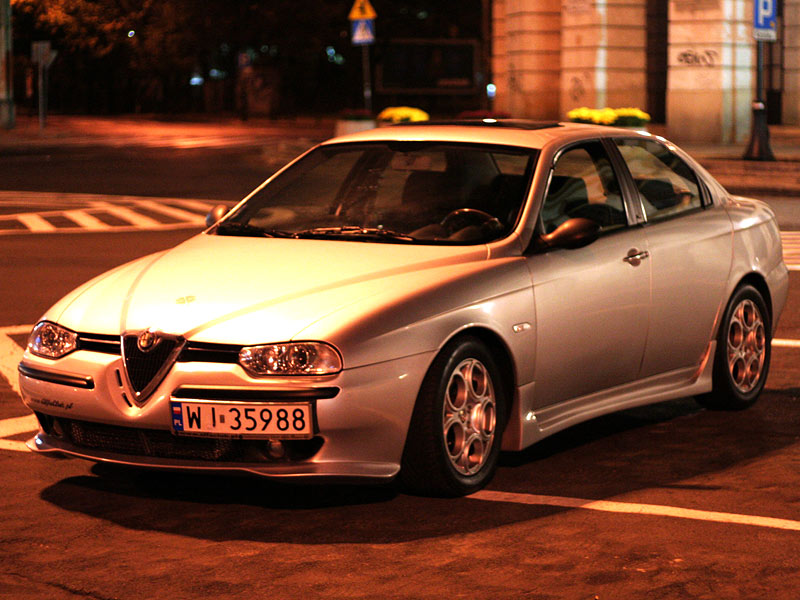
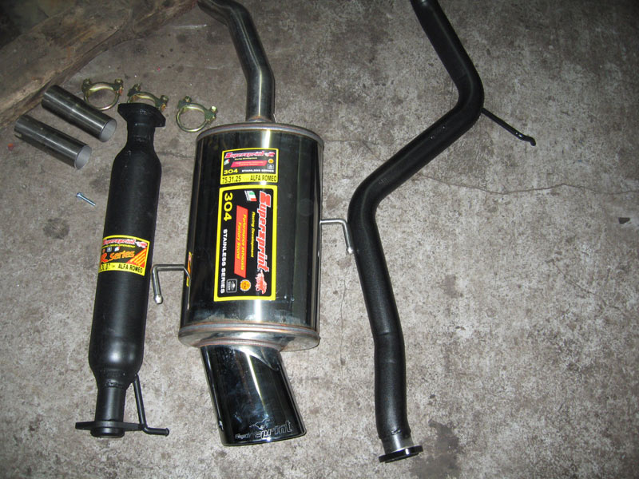
Submitted: 2006
![[Prev]](bw_prev.gif)
![[Next]](bw_next.gif)